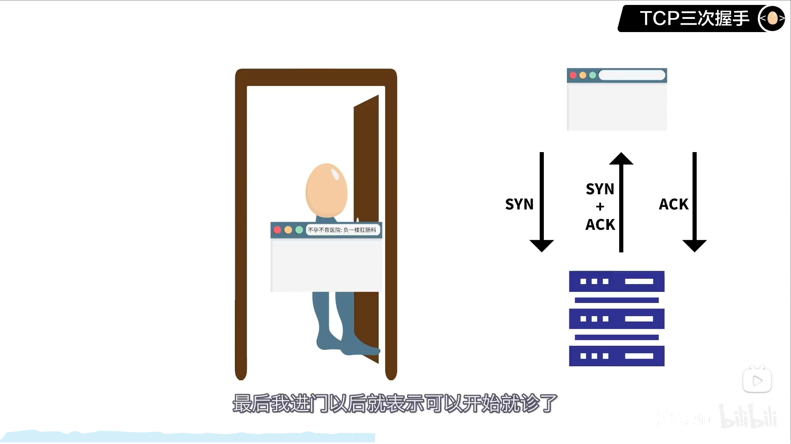
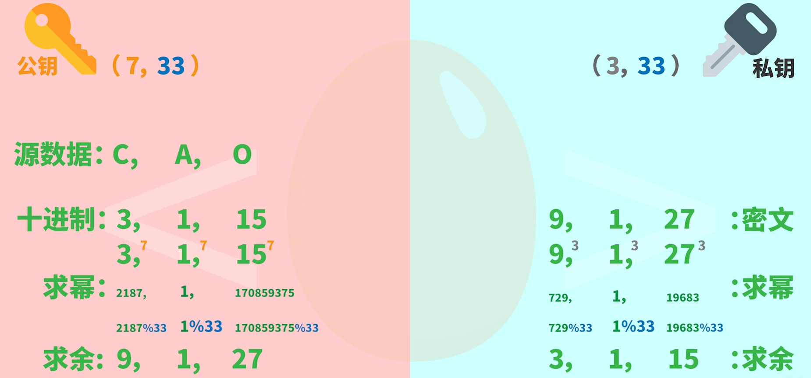

网络的功能
计算机网络的功能主要体现在资源共享、数据通信和分布式处理三个方面。资源共享是计算机网络用户提供的最主要的功能，资源是指在有限时间内可为用户提供各种服务的软、硬件，资源共享是指网络中的用户能够全部地使用网络中的资源，包括软件共享、硬件共享和数据共享，通常，用户本身不需要考虑自己所使用的资源在网络中的具体位置。
数据通信主要完成资源子网中各个独立的计算机系统之间的信息数据的传递，分布式处理则是利用网络技术多个独立的计算机系统连接组合成一个高性能的计算机系统，计算机群集，分布式系统，网络等都是这一功能应用的典型实例。
COOKIE/SESSION
https://www.jianshu.com/p/6623416161ff
- 由于HTTP协议是无状态的协议，所以服务端需要记录用户的状态时，就需要用某种机制来识具体的用户，这个机制就是Session.典型的场景比如购物车，当你点击下单按钮时，由于HTTP协议无状态，所以并不知道是哪个用户操作的，所以服务端要为特定的用户创建了特定的Session，用用于标识这个用户，并且跟踪用户，这样才知道购物车里面有几本书。这个Session是保存在服务端的，有一个唯一标识。在服务端保存Session的方法很多，内存、数据库、文件都有。集群的时候也要考虑Session的转移，在大型的网站，一般会有专门的Session服务器集群，用来保存用户会话，这个时候 Session 信息都是放在内存的，使用一些缓存服务比如Memcached之类的来放 Session。
- 思考一下服务端如何识别特定的客户？这个时候Cookie就登场了。每次HTTP请求的时候，客户端都会发送相应的Cookie信息到服务端。实际上大多数的应用都是用 Cookie 来实现Session跟踪的，第一次创建Session的时候，服务端会在HTTP协议中告诉客户端，需要在 Cookie 里面记录一个Session ID，以后每次请求把这个会话ID发送到服务器，我就知道你是谁了。有人问，如果客户端的浏览器禁用了 Cookie 怎么办？一般这种情况下，会使用一种叫做URL重写的技术来进行会话跟踪，即每次HTTP交互，URL后面都会被附加上一个诸如 sid=xxxxx 这样的参数，服务端据此来识别用户。
- Cookie其实还可以用在一些方便用户的场景下，设想你某次登陆过一个网站，下次登录的时候不想再次输入账号了，怎么办？这个信息可以写到Cookie里面，访问网站的时候，网站页面的脚本可以读取这个信息，就自动帮你把用户名给填了，能够方便一下用户。这也是Cookie名称的由来，给用户的一点甜头。所以，总结一下：Session是在服务端保存的一个数据结构，用来跟踪用户的状态，这个数据可以保存在集群、数据库、文件中；Cookie是客户端保存用户信息的一种机制，用来记录用户的一些信息，也是实现Session的一种方式。
访问网站
1、在浏览器输入url
2、浏览器向DNS解析url的ip地址

3、浏览器与服务器建立tcp连接（默认端口号80；2个套接字确定一条tcp连接）

4、浏览器发出http请求（get index.html)
5、服务器通过http将index.html发送给浏览器
6、tcp连接释放，浏览器解释文件index.html，并将web页显示给用户
HTTP缓存
https://www.jianshu.com/p/227cee9c8d15
HTTP
超文本传输协议HyperText Transfer Protocol
基于TCP协议的应用层传输协议
客户端和服务端
无状态 (stateless) 协议 Cookie
Connection: Keep-Alive实现长连接
正在传输的类型由Content-Type加以标记
在实际的应用中，客户端往往会发出一系列请求，接着服务器端对每个请求进行响应。对于这些请求|响应，如果每次都经过一个单独的TCP连接发送，称为非持久连接。反之，如果每次都经过相同的TCP连接进行发送，称为持久连接。
非持久连接在每次请求|响应之后都要断开连接，下次再建立新的TCP连接，这样就造成了大量的通信开销。例如前面提到的往返时间(RTT) 就是在建立TCP连接的过程中的代价。

HTTP请求
由请求行，消息报头，请求正文三部分构成
1、请求行由请求Method, URL 字段和HTTP Version三部分构成
|
|
2、消息报头由一系列的键值对组成，允许客户端向服务器端发送一些附加信息或者客户端自身的信息

3、HTTP请求正文
只有在发送POST请求时才会有请求正文，GET方法并没有请求正文
HTTP响应
也由三部分组成，包括状态行，消息报头，响应正文。
1、状态行也由三部分组成，包括HTTP协议的版本，状态码，以及对状态码的文本描述。例如
|
|
GET/POST
- GET提交的数据放在URL中，POST则不会。这是最显而易见的差别。这点意味着GET更不安全（POST也不安全，因为HTTP是明文传输抓包就能获取数据内容，要想安全还得加密）
- GET回退浏览器无害，POST会再次提交请求（GET方法回退后浏览器再缓存中拿结果，POST每次都会创建新资源）
- GET提交的数据大小有限制（是因为浏览器对URL的长度有限制，GET本身没有限制），POST没有
- GET可以被保存为书签，POST不可以。这一点也能感受到。
- GET能被缓存，POST不能
- GET只允许ASCII字符，POST没有限制
- GET会保存再浏览器历史记录中，POST不会。这点也能感受到。
HTTPS
内容加密建立一个信息安全通道，来保证数据传输的安全；
身份认证确认网站的真实性
数据完整性防止内容被第三方冒充或者篡改
SSL (Secure Socket Layer，安全套接字层)
TLS (Transport Layer Security，传输层安全协议)
TLS
协议
https://zhuanlan.zhihu.com/p/93894145
电子邮件
SMTP（simple mail transfer protocol）推 POP3（post office protocol邮局协议）拉 MIME（multipurpose internet mail extensions多用途网络邮件补充）：非ASCII码数据 IMAP（因特网报文存取协议）：只读报文的某一部分
NAT
(Network Address Translation)网络地址转换
私有地址（10 172 192）–公用地址
该网络中的主机使用私用IP地址.当私有网络内部主机和外部Internet通信时,网关(gateway)路由器负责将私有IP地址转换为全球IP地址
NAPT
(Network Address and Port Translation)
CIDR
Classless Inter-Domain Routing，无类域间路由
细分网络、子网掩码、CIDR（构成超网，查找路由表最长前缀匹配）
ARP
地址解析协议，即ARP（Address Resolution Protocol）根据IP地址获取物理地址的一个TCP/IP协议
工作过程
假设主机A和B在同一个网段，主机A要向主机B发送信息，具体的地址解析过程如下：
- 主机A首先查看自己的ARP缓存表，确定其中是否包含有主机B对应的ARP表项。如果找到了对应的MAC地址，则主机A直接利用ARP表中的MAC地址，对IP数据包进行帧封装，并将数据包发送给主机B。
- 如果主机A在ARP表中找不到对应的MAC地址，则将缓存该数据报文，然后以广播方式发送一个ARP请求报文。ARP请求报文中的发送端IP地址和发送端MAC地址为主机A的IP地址和MAC地址，目标IP地址和目标MAC地址为主机B的IP地址和全0的MAC地址。由于ARP请求报文以广播方式发送，该网段上的所有主机都可以接收到该请求，但只有被请求的主机（即主机B）会对该请求进行处理。
- 主机B比较自己的IP地址和ARP请求报文中的目标IP地址，当两者相同时进行如下处理：将ARP请求报文中的发送端（即主机A）的IP地址和MAC地址存入自己的ARP表中。之后以单播方式发送ARP响应报文给主机A，其中包含了自己的MAC地址。
- 主机A收到ARP响应报文后，将主机B的MAC地址加入到自己的ARP表中以用于后续报文的转发，同时将IP数据包进行封装后发送出去。
当主机A和主机B不在同一网段时，主机A就会先向网关发出ARP请求，ARP请求报文中的目标IP地址为网关的IP地址。当主机A从收到的响应报文中获得网关的MAC地址后，将报文封装并发给网关。如果网关没有主机B的ARP表项，网关会广播ARP请求，目标IP地址为主机B的IP地址，当网关从收到的响应报文中获得主机B的MAC地址后，就可以将报文发给主机B；如果网关已经有主机B的ARP表项，网关直接把报文发给主机B。
DHCP
DHCP（Dynamic Host Configuration Protocol，动态主机配置协议）
是一个局域网的网络协议，使用UDP协议工作，统一使用两个IANA分配的端口：67（服务器端），68（客户端）。DHCP通常被用于局域网环境，主要作用是集中的管理、分配IP地址，使client动态的获得IP地址、Gateway地址、DNS服务器地址等信息，并能够提升地址的使用率。简单来说，DHCP就是一个不需要账号密码登录的、自动给内网机器分配IP地址等信息的协议。
ICMP
ping/traceroute
ICMP是 Internet Control Message Protocol 的缩写，即互联网控制消息协议
它用于 TCP/IP 网络中发送控制消息，提供可能发生在通信环境中的各种问题反馈，通过这些信息，使网络管理者可以对所发生的问题作出诊断，然后采取适当的措施解决问题。虽然 ICMP 是网络层协议，但是它不像 IP 协议和 ARP 协议一样直接传递给数据链路层，而是先封装成 IP 数据包然后再传递给数据链路层。所以在 IP 数据包中如果协议类型字段的值是 1 的话，就表示 IP 数据是 ICMP 报文。
ICMP协议的类型分为两大类，查询报文和差错报文。

非对称加密RSA
公钥(E,N) 私钥（D,N）

CDN
Content Delivery Network，内容分发网络
https://zhuanlan.zhihu.com/p/52362950
诞生
随着互联网的爆炸式发展，网络拥塞越来越严重，将会成为互联网发展的最大障碍。
原理
CDN这个技术其实说起来并不复杂，最初的核心理念，就是将内容缓存在终端用户附近。
内容源不是远么？那么，我们就在靠近用户的地方，建一个缓存服务器，把远端的内容，复制一份，放在这里，不就OK了？

VPN
应用：居家办公、访问校园网、访问**
ISP（Internet Service Provider）：因特网服务提供商
VPN（Virtual Private Network）：虚拟专用网络
站点–站点 VPN
客户端站点VPN、远程登录VPN
不需要长时间进行链接、使用浏览器通信、
全隧道、半隧道
VPN的职责
加密（不然你知道、完整（数据被你破坏、认证（电脑被你黑了


VPN框架
IPsec（网络层、SSL/TLS（表示层